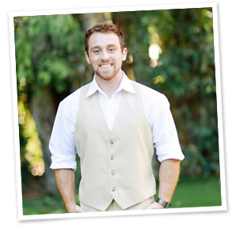

My objective is to attain a position that can utilize my skills as an honest, responsible, dependable, and hardworking individual. Furthermore, I would liked to expand my experience in software development and the computer science industry as a whole.
- Education
-
San Diego State University
Major: B.S. in Computer Science
Palomar Community College
Certificate: Web Development with Emphasis in Java/Open Source
Dean’s list Spring 2009
- Skills
-
Knowledge Base
- Web development & design
- Software deployment solutions
- Revision control systems
- Server creation & maintenance
- Coding & scripting
- Debugging & troubleshooting
- Testing & documentation
- User training & support
Technology Summary
- Programming: C, C++, Java, JavaScript, JSON, PHP, Python, HTML, XML, CSS, SQL
- Applications: Adobe Photoshop, Net Beans, Eclipse, MS Visual Studio
- Application Systems: LAMP Stacks, GIT, Mercurial, SVN, SSH
- Database Systems: SQL Server, MySQL
- Operating Systems: Apple, Linux/Unix, Windows
- Experience
-
Conversion Voodoo Web Developer - San Diego, CA - 2011–Present
Part of a small team of developers and designers, using advanced development strategies, to implement and maintain custom reporting and testing system for numerous clients
- Maintained several LAMP based servers running on various hardware and several different Linux distributions. Each with automated DNS failover and DB synchronization
- Managed domains and tracked sites using custom reporting engine
- Implemented frontend AB and multivariate tests to improve site performance
- Worked with team members to implement system wide changes including the creation and maintenance of a custom analytics / testing engine using PHP
San Diego Luxury Transportation
Web Designer/IT Administrator - San Diego, CA - 2009-2011
Created web sites geared toward specific regional ad campaigns, implemented new infrastructure technologies and provided administrative support for company systems.
- Designed and implemented websites for various marketing campaigns including but not limited to PPC and affiliate traffic
- Optimized specific sites for SEO traffic
- Administered office computer systems and implemented new technologies as needed
- Volunteerism
-
San Pasqual High School Wrestling Coach - Escondido, CA - 2007-2009
Helped maintain after school wrestling program for San Pasqual High School athletes.
- References
- Available on request